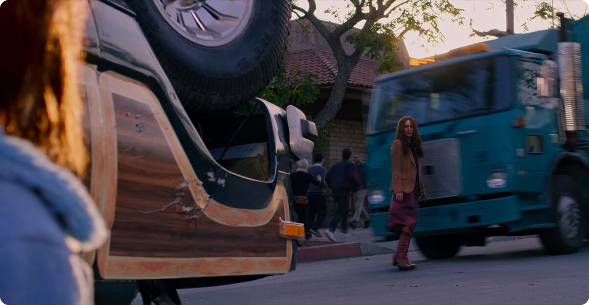

Страх как первичная реакция
С появлением угрозы общество рушится почти мгновенно. Люди теряют способность к рациональному поведению, поскольку паника вытесняет логику, и, как следствие, решения принимаются импульсивно, а коллективные нормы перестают работать. Важно, что причина разрушения — не сама сущность, а реакция на неё. Люди не знают, с чем столкнулись, и именно это незнание запускает цепную реакцию страха.
